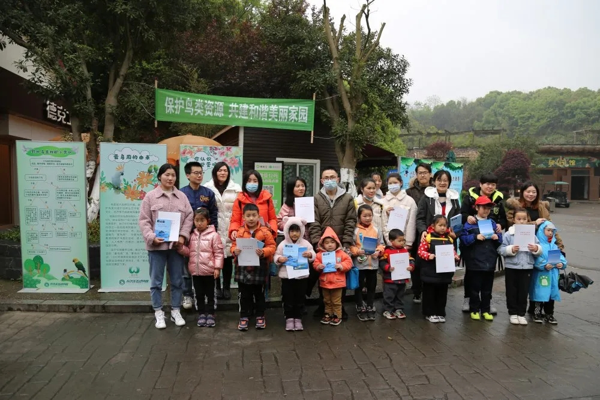

Добро пожаловать на сайт ZOO Zoo~
Сегодня утром в нашем парке стартовала пропагандистская акция «Защитим птичьи ресурсы, построим гармоничную и красивую родину», посвященная Неделе любви к птицам. Через демонстрацию образцов птичьих яиц, демонстрацию научно-пропагандистских плакатов, птичье гнездо «сделай сам» и объяснения учителя популярных наук в дикой природе. Как спасти раненых птиц, пусть все осознают, что защита птиц и диких животных — это не только обязанность, Это наша долгая и неизбежная ответственность.
Птицы являются хранителями леса и важной частью природной экосистемы.Они играют незаменимую роль в поддержании баланса экосистемы.Мы надеемся, что все будут продолжать повышать осведомленность о защите дикой природы.
